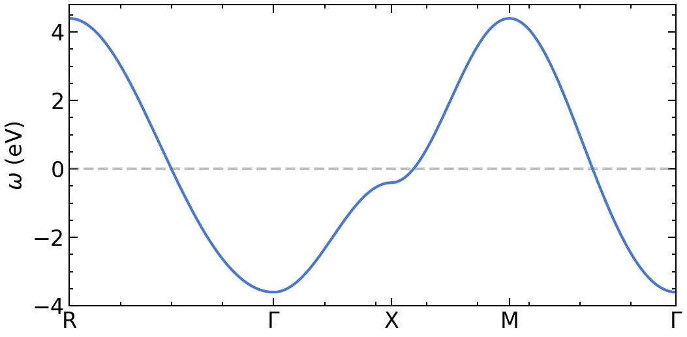
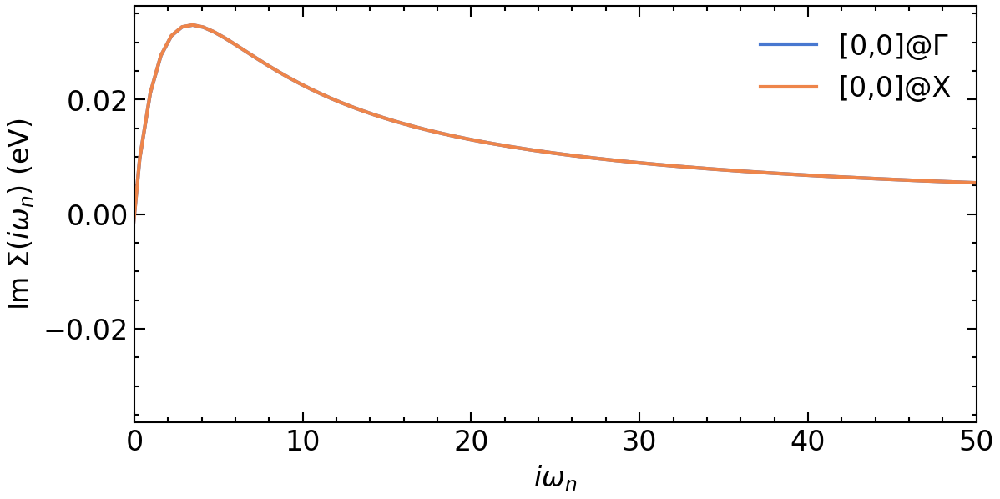
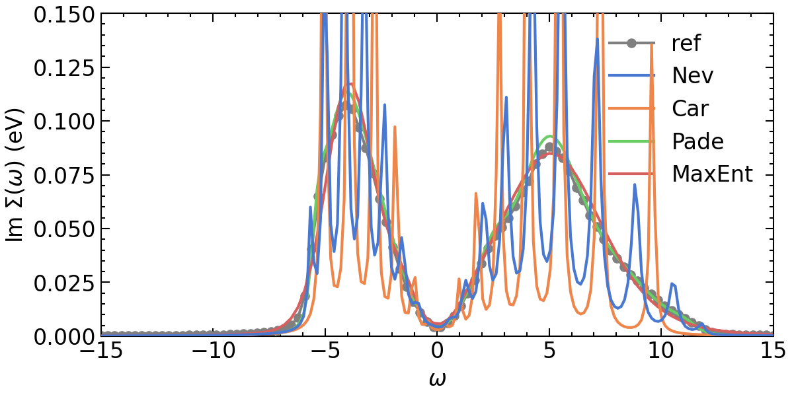
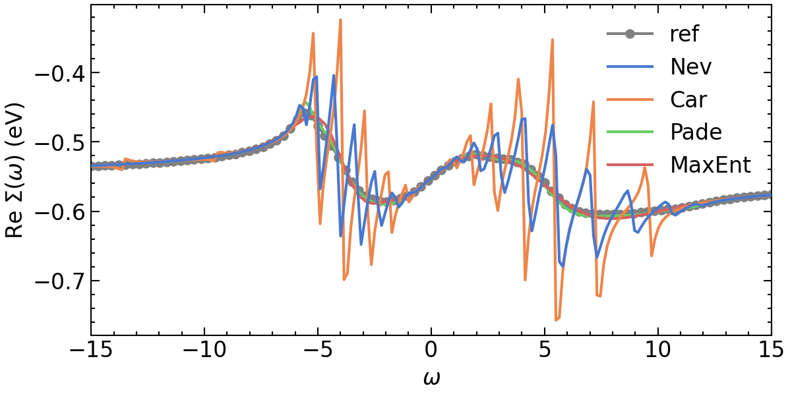

GW self-energy of a 2D square lattice Hubbard model
[1]:
import sys, os
import numpy as np
from triqs.plot.mpl_interface import plt,oplot
from h5 import HDFArchive
from triqs.atom_diag import *
from triqs.gf import *
from triqs.operators import c, c_dag, n, dagger
from itertools import product
from triqs.lattice.tight_binding import TBLattice
from triqs.lattice.utils import k_space_path
from triqs_tprf.lattice import lattice_dyson_g0_wk, lattice_dyson_g_wk, lattice_dyson_g0_fk, dynamical_screened_interaction_W, lattice_dyson_g_fk
from triqs_tprf.gw import bubble_PI_wk, gw_sigma, lindhard_chi00, g0w_sigma
from triqs_Nevanlinna import Solver
from triqs_maxent import *
import seaborn as sns
import scienceplots
plt.style.use(['science','notebook'])
sns.set_palette('muted')
Warning: could not identify MPI environment!
Starting serial run at: 2023-07-19 16:07:16.275962
Setup simple two orbital 2D Hubbard model on square lattice
[2]:
n_orb = 1
loc = np.zeros((n_orb,n_orb))
for i in range(n_orb):
for j in range(n_orb):
if i != 0 and i==j:
loc[i,j] = -0.3
if j > i or j < i:
loc[i,j] = -0.5
t = -1.0 * np.eye(n_orb) #nearest neighbor hopping
tp = 0.1 * np.eye(n_orb) #next nearest neighbor hopping
hop= { (0,0) : loc,
(1,0) : t,
(-1,0) : t,
(0,1) : t,
(0,-1) : t,
(1,1) : tp,
(-1,-1): tp,
(1,-1) : tp,
(-1,1) : tp}
TB = TBLattice(units = [(1, 0, 0) , (0, 1, 0)], hoppings = hop, orbital_positions= [(0., 0., 0.)]*n_orb)
plot dispersion along high-symmetry lines
[3]:
n_pts = 101
G = np.array([ 0.00, 0.00, 0.00])
M = np.array([0.5, 0.5, 0.0])
X = np.array([0.5, 0.0, 0.0])
R = np.array([0.5, 0.5, 0.5])
paths = [(R, G), (G, X), (X, M), (M, G)]
kvecs, k = k_space_path(paths, num=n_pts, bz=TB.bz)
e_mat = TB.fourier(kvecs)
e_val = TB.dispersion(kvecs)
eps_k = {'k': k, 'K': np.concatenate(([0],k[n_pts-1::n_pts])), 'eval': e_val, 'emat' : e_mat}
[4]:
fig, ax = plt.subplots(1,1, figsize=(8,4), dpi=150, squeeze=False)
ax = ax.reshape(-1)
for band in range(eps_k['eval'].shape[1]):
ax[0].plot(eps_k['k'], eps_k['eval'][:,band].real, color='C0', zorder=2.5)
ax[0].axhline(y=0,zorder=2,color='gray',alpha=0.5,ls='--')
ax[0].set_xticks(eps_k['K'])
ax[0].set_xticklabels([r'R', '$\Gamma$', 'X', 'M', r'$\Gamma$'])
ax[0].set_xlim([eps_k['K'].min(), eps_k['K'].max()])
ax[0].set_ylabel(r'$\omega$ (eV)')
plt.show()

GW in imaginary time
[5]:
k_grid = (30,30,1)
k_mesh = TB.get_kmesh(n_k = k_grid)
e_k = TB.fourier(k_mesh)
eps_k = TB.dispersion(k_mesh)
mu = 0.
beta = 10
n_iw = 400
iw_mesh = MeshImFreq(beta=beta, S='Fermion', n_max=n_iw)
G0_iwk = lattice_dyson_g0_wk(mu=mu, e_k=e_k, mesh=iw_mesh)
setup bare interaction
[6]:
def construct_U_kan(n_orb, U, J, Up=None, Jc=None):
orb_range = range(0, n_orb)
U_kan = np.zeros((n_orb, n_orb, n_orb, n_orb))
if not Up:
Up = U-2*J
if not Jc:
Jc = J
for i,j,k,l in product(orb_range, orb_range, orb_range, orb_range):
if i == j == k == l: # Uiiii
U_kan[i, j, k, l] = U
elif i == k and j == l: # Uijij
U_kan[i, j, k, l] = Up
elif i == l and j == k: # Uijji
U_kan[i, j, k, l] = J
elif i == j and k ==l: # Uiijj
U_kan[i, j, k, l] = Jc
return U_kan
[7]:
U=1
Up=0.2
J=0.4
V_k = Gf(mesh=k_mesh, target_shape=[n_orb*1]*4)
V_bare = np.zeros((n_orb,n_orb,n_orb,n_orb))
# simple onsite intra orbital Coulomb repulsion
for i in range(n_orb):
for j in range(n_orb):
if i == j:
V_bare[i,i,j,j] = U
else:
V_bare[i,i,j,j] = Up
V_bare = construct_U_kan(n_orb=n_orb,U=U,J=J,Up=Up)
V_k.data[:] = V_bare
Run one GW loop
[8]:
print('--> pi_bubble')
PI_iwk = bubble_PI_wk(G0_iwk)
print('--> screened_interaction_W')
Wr_iwk = dynamical_screened_interaction_W(PI_iwk, V_k)
print('--> gw_self_energy')
Σ_iwk = gw_sigma(Wr_iwk, G0_iwk)
print('--> lattice_dyson_g_wk')
G_wk = lattice_dyson_g_wk(mu, e_k, Σ_iwk)
Σ_Γ_iw = Σ_iwk[:, Idx(0,0,0)]
Σ_X_iw = Σ_iwk[:, Idx(k_grid[1]-1,0,0)]
--> pi_bubble
--> screened_interaction_W
--> gw_self_energy
--> lattice_dyson_g_wk
Plot results
[25]:
fig, ax = plt.subplots(n_orb, n_orb, figsize=(8*n_orb,4*n_orb), dpi=150, squeeze=False,sharex=True)
ax = ax.reshape(-1)
ax[0].oplot(Σ_Γ_iw[i,j].imag, label=f'[{i},{j}]@$\Gamma$')
ax[0].oplot(Σ_X_iw[i,j].imag, label=f'[{i},{j}]@X')
ax[0].set_xlim(0,50)
ax[0].set_xlabel(r'$i\omega_n$')
ax[0].set_ylabel(r'Im $\Sigma (i\omega_n)$ (eV)')
plt.tight_layout(pad=0.4, w_pad=0.1, h_pad=0.4)
plt.show()

GW on real frequency axis
[10]:
# make sure 0 is not in the mesh! Divergence for q=[0,0,0]
# no large freq mesh is needed. kmesh critical for convergence here
n_w = 100
delta = 0.1
GW_window = (-15, 15)
w_mesh = MeshReFreq(window=GW_window, n_w=n_w)
G0_wk = lattice_dyson_g0_fk(mu=mu, e_k=e_k, mesh=w_mesh, delta=delta)
[11]:
print('--> pi_bubble')
PI_wk = lindhard_chi00(e_k=e_k, mesh=w_mesh, beta=beta, mu=mu, delta=delta)
print('--> screened_interaction_W')
Wr_wk = dynamical_screened_interaction_W(PI_wk, V_k)
print('--> gw_self_energy')
Σ_wk = g0w_sigma(mu=mu, beta=beta, e_k=e_k, W_fk=Wr_wk, v_k=V_k, delta=delta)
print('--> lattice_dyson_g_wk')
g_fk = lattice_dyson_g_fk(mu, e_k, Σ_wk, delta)
Σ_Γ_w = Σ_wk[:, Idx(0,0,0)]
Σ_X_w = Σ_wk[:, Idx(k_grid[1]-1,0,0)]
--> pi_bubble
--> screened_interaction_W
--> gw_self_energy
--> lattice_dyson_g_wk
Analytic continuation
Nevanlinna
[12]:
# setup Nevanlinna kernel solver
solver = Solver(kernel='CARATHEODORY')
# For the caratheodory formalism we have to subtract the Hartree shift
solver.solve(Σ_Γ_iw-Σ_Γ_iw(Σ_Γ_iw.mesh.last_index()))
Σ_w_mesh = MeshReFreq(window=GW_window, n_w=n_w*2)
Σ_Γ_w_CN = solver.evaluate(Σ_w_mesh, delta)
[13]:
# setup Nevanlinna kernel solver
solver = Solver(kernel='NEVANLINNA')
solver.solve(Σ_Γ_iw)
Σ_w_mesh = MeshReFreq(window=GW_window, n_w=n_w*2)
Σ_Γ_w_N = solver.evaluate(Σ_w_mesh, delta)
This is Nevanlinna analytical continuation. All off-diagonal elements will be ignored.
Pade
[14]:
Σ_Γ_w_P = Σ_Γ_w_N.copy()
Σ_Γ_w_P.set_from_pade(Σ_Γ_iw, n_points=n_iw, freq_offset=delta)
MaxEnt
[15]:
# Initialize SigmaContinuator
isc = DirectSigmaContinuator(Σ_Γ_iw)
[16]:
tm = TauMaxEnt()
tm.set_G_iw(isc.Gaux_iw)
tm.set_error(1.e-4)
tm.omega = HyperbolicOmegaMesh(omega_min=GW_window[0], omega_max=GW_window[1], n_points=300)
tm.alpha_mesh = LogAlphaMesh(alpha_min=1e-2, alpha_max=5e2, n_points=60)
result = tm.run()
print(('LineFit: ', result.analyzer_results['LineFitAnalyzer']['alpha_index']))
2023-07-19 16:08:15.167421
MaxEnt run
TRIQS application maxent
Copyright(C) 2018 Gernot J. Kraberger
Copyright(C) 2018 Simons Foundation
Authors: Gernot J. Kraberger and Manuel Zingl
This program comes with ABSOLUTELY NO WARRANTY.
This is free software, and you are welcome to redistributeit under certain conditions; see file LICENSE.
Please cite this code and the appropriate original papers (see documentation).
Minimal chi2: 2.780343854031604
scaling alpha by a factor 2401 (number of data points)
alpha[ 0] = 1.20050000e+06, chi2 = 1.86098288e+05, n_iter= 24
alpha[ 1] = 9.99352274e+05, chi2 = 1.47692183e+05, n_iter= 4
alpha[ 2] = 8.31907511e+05, chi2 = 1.17033657e+05, n_iter= 4
alpha[ 3] = 6.92518670e+05, chi2 = 9.25372230e+04, n_iter= 4
alpha[ 4] = 5.76484888e+05, chi2 = 7.29614636e+04, n_iter= 4
alpha[ 5] = 4.79892947e+05, chi2 = 5.73366261e+04, n_iter= 4
alpha[ 6] = 3.99485305e+05, chi2 = 4.48992104e+04, n_iter= 4
alpha[ 7] = 3.32550227e+05, chi2 = 3.50392785e+04, n_iter= 4
alpha[ 8] = 2.76830342e+05, chi2 = 2.72618500e+04, n_iter= 4
alpha[ 9] = 2.30446507e+05, chi2 = 2.11604692e+04, n_iter= 4
alpha[10] = 1.91834436e+05, chi2 = 1.63995950e+04, n_iter= 4
alpha[11] = 1.59691945e+05, chi2 = 1.27025481e+04, n_iter= 4
alpha[12] = 1.32935034e+05, chi2 = 9.84259729e+03, n_iter= 4
alpha[13] = 1.10661332e+05, chi2 = 7.63572391e+03, n_iter= 4
alpha[14] = 9.21196614e+04, chi2 = 5.93432811e+03, n_iter= 4
alpha[15] = 7.66847089e+04, chi2 = 4.62157117e+03, n_iter= 4
alpha[16] = 6.38359336e+04, chi2 = 3.60624447e+03, n_iter= 4
alpha[17] = 5.31400128e+04, chi2 = 2.81813049e+03, n_iter= 4
alpha[18] = 4.42362288e+04, chi2 = 2.20384925e+03, n_iter= 4
alpha[19] = 3.68243030e+04, chi2 = 1.72320364e+03, n_iter= 4
alpha[20] = 3.06542699e+04, chi2 = 1.34605178e+03, n_iter= 4
alpha[21] = 2.55180461e+04, chi2 = 1.04973179e+03, n_iter= 4
alpha[22] = 2.12424135e+04, chi2 = 8.17037947e+02, n_iter= 4
alpha[23] = 1.76831772e+04, chi2 = 6.34707643e+02, n_iter= 8
alpha[24] = 1.47203026e+04, chi2 = 4.92342240e+02, n_iter= 8
alpha[25] = 1.22538675e+04, chi2 = 3.81665508e+02, n_iter= 8
alpha[26] = 1.02006917e+04, chi2 = 2.96023756e+02, n_iter= 9
alpha[27] = 8.49153220e+03, chi2 = 2.30046214e+02, n_iter= 9
alpha[28] = 7.06874803e+03, chi2 = 1.79404997e+02, n_iter= 9
alpha[29] = 5.88435603e+03, chi2 = 1.40634238e+02, n_iter= 9
alpha[30] = 4.89841281e+03, chi2 = 1.10984285e+02, n_iter= 9
alpha[31] = 4.07766763e+03, chi2 = 8.82981124e+01, n_iter= 10
alpha[32] = 3.39444099e+03, chi2 = 7.09038537e+01, n_iter= 10
alpha[33] = 2.82569123e+03, chi2 = 5.75209700e+01, n_iter= 10
alpha[34] = 2.35223737e+03, chi2 = 4.71790688e+01, n_iter= 11
alpha[35] = 1.95811226e+03, chi2 = 3.91489212e+01, n_iter= 11
alpha[36] = 1.63002410e+03, chi2 = 3.28852039e+01, n_iter= 12
alpha[37] = 1.35690820e+03, chi2 = 2.79802902e+01, n_iter= 12
alpha[38] = 1.12955376e+03, chi2 = 2.41281131e+01, n_iter= 13
alpha[39] = 9.40293314e+02, chi2 = 2.10968320e+01, n_iter= 13
alpha[40] = 7.82744074e+02, chi2 = 1.87088142e+01, n_iter= 14
alpha[41] = 6.51592729e+02, chi2 = 1.68263626e+01, n_iter= 15
alpha[42] = 5.42416222e+02, chi2 = 1.53416958e+01, n_iter= 15
alpha[43] = 4.51532599e+02, chi2 = 1.41699055e+01, n_iter= 16
alpha[44] = 3.75876826e+02, chi2 = 1.32439023e+01, n_iter= 17
alpha[45] = 3.12897427e+02, chi2 = 1.25106661e+01, n_iter= 18
alpha[46] = 2.60470433e+02, chi2 = 1.19283627e+01, n_iter= 18
alpha[47] = 2.16827755e+02, chi2 = 1.14640737e+01, n_iter= 20
alpha[48] = 1.80497551e+02, chi2 = 1.10919855e+01, n_iter= 21
alpha[49] = 1.50254592e+02, chi2 = 1.07919377e+01, n_iter= 22
alpha[50] = 1.25078941e+02, chi2 = 1.05482575e+01, n_iter= 23
alpha[51] = 1.04121553e+02, chi2 = 1.03488142e+01, n_iter= 25
alpha[52] = 8.66756437e+01, chi2 = 1.01842507e+01, n_iter= 27
alpha[53] = 7.21528544e+01, chi2 = 1.00473564e+01, n_iter= 28
alpha[54] = 6.00634061e+01, chi2 = 9.93256293e+00, n_iter= 30
alpha[55] = 4.99995848e+01, chi2 = 9.83554893e+00, n_iter= 32
alpha[56] = 4.16219898e+01, chi2 = 9.75293868e+00, n_iter= 36
alpha[57] = 3.46480884e+01, chi2 = 9.68208054e+00, n_iter= 37
alpha[58] = 2.88426872e+01, chi2 = 9.62088520e+00, n_iter= 40
alpha[59] = 2.40100000e+01, chi2 = 9.56770438e+00, n_iter= 42
MaxEnt loop finished in 0:00:20.269188
('LineFit: ', 40)
[17]:
isc.set_Gaux_w_from_Aaux_w(result.analyzer_results['LineFitAnalyzer']['A_out'], result.omega, np_interp_A=n_w*2,
np_omega=n_w, w_min=GW_window[0], w_max=GW_window[1])
Σ_Γ_w_ME = isc.S_w
WARNING: the signature for all_reduce is now 'all_reduce(x, comm=world, op=MPI.SUM)'
attempting compatibility with old signature
Comparison: Pade, Nevanlinna, Pade, and Maxent
[23]:
fig, ax = plt.subplots(n_orb, n_orb, figsize=(8*n_orb,4*n_orb), dpi=150, squeeze=False,sharex=True)
ax = ax.reshape(-1)
ax[0].oplot(Σ_Γ_w[i,j].imag, '-o', c='gray', label=f'ref')
ax[0].oplot(Σ_Γ_w_N[i,j].imag, label=f'Nev', zorder=10)
ax[0].oplot(Σ_Γ_w_CN[i,j].imag, label=f'Car', zorder=6)
ax[0].oplot(Σ_Γ_w_P[i,j].imag, label=f'Pade')
ax[0].oplot(Σ_Γ_w_ME[i,j].imag, label=f'MaxEnt')
ax[0].set_xlim(GW_window)
ax[0].set_ylim(0,0.15)
ax[0].set_xlabel(r'$\omega$')
ax[0].set_ylabel(r'Im $\Sigma (\omega)$ (eV)')
plt.tight_layout(pad=0.4, w_pad=0.1, h_pad=0.4)
plt.show()
fig, ax = plt.subplots(n_orb, n_orb, figsize=(8*n_orb,4*n_orb), dpi=150, squeeze=False,sharex=True)
ax = ax.reshape(-1)
# plotting results
ax[0].oplot(Σ_Γ_w[i,j].real, '-o', c='gray', label=f'ref')
ax[0].oplot(Σ_Γ_w_N[i,j].real, label=f'Nev', zorder=10)
ax[0].oplot((Σ_Γ_w_CN[i,j]+Σ_Γ_iw(Σ_Γ_iw.mesh.last_index())[i,j]).real, label=f'Car', zorder=6)
ax[0].oplot(Σ_Γ_w_P[i,j].real, label=f'Pade')
ax[0].oplot(Σ_Γ_w_ME[i,j].real, label=f'MaxEnt')
ax[0].set_xlim(GW_window)
ax[0].set_xlabel(r'$\omega$')
ax[0].set_ylabel(r'Re $\Sigma (\omega)$ (eV)')
plt.tight_layout(pad=0.4, w_pad=0.1, h_pad=0.4)
plt.show()

